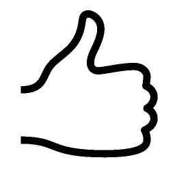
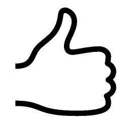

Leo Messi's footballing career started in 1995 at Newell's Old Boys, where he played until the year 2000. At the age of 13, Lionel Messi crossed the Atlantic to try his luck in Barcelona, and joined the Under 14s. Messi made spectacular progress at each of the different age levels, climbing through the ranks to Barça C, followed by Barça B and the first team in record time.
Luis Alberto Suárez Díaz came to the Camp Nou in the summer of 2014 as holder of the Golden Boot and one of the biggest stars in world football. The striker was born in Salto (Uruguay) on January 24 1987, and has signed for five seasons.
Born on 21 March 1991 in Mâcon, France, Antoine Griezmann is one of the best players in the world. The striker came to Barça in the summer of 2019 after consolidating himself as one of the top footballers in La Liga after spells with Real Sociedad and Atlético Madrid.
Amsu Fati, who turns 17 on October 31, replaced Bojan Krkic as Barcelona's youngest scorer in La Liga and is the third youngest player to score a goal in Spain's top flight behind Fabrice Olinga and Iker Muniain.
At the end of 2014 he signed his first professional contract with French club Rennes. He made his Ligue 1 debut at just the age of 17 and he scored his first goal against Girondins. His progress attracted the attention of Borussia Dortmund and he signed for the Bundesliga club in the summer of 2016. Dembélé adapted quickly to German football, scoring 12 goals and providing 20 assists in his first season.
 
